Experience world-class inshore kayak fishing along Alabama and Florida's Gulf Coast. From trophy speckled trout to hard-fighting redfish, we put you on the fish.
From calm marshlands to open Gulf waters, choose the adventure that calls to you.
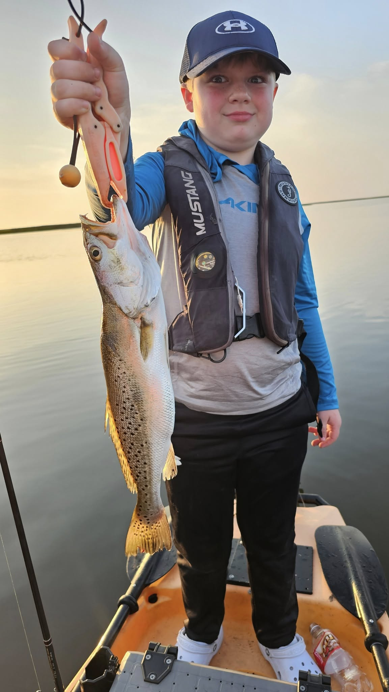
Speckled trout... too many good things to say about them really. If you love specks and want to learn how to target them, get ready to pedal and let's go find the deep pockets and sandy bottoms. Artificial bait is our favorite, but a popping cork and live shrimp will always get it done. And just maybe... you will land a Gator Speckled Trout to talk about forever.
Book This Trip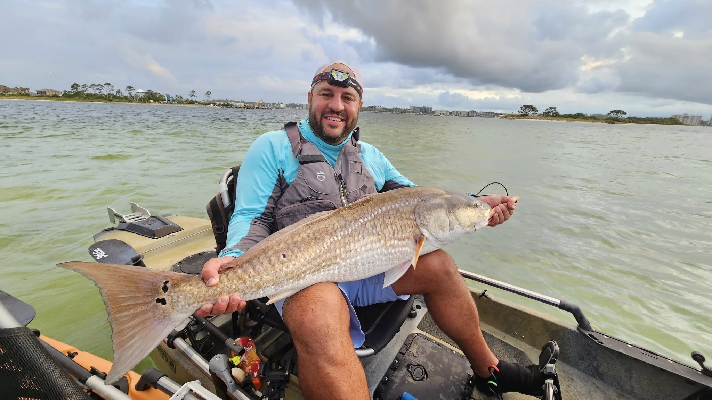
If you're looking to target Redfish, we can go searching through the marshland that is filled with life and get you on one of the toughest fighting fish to catch inshore in only 1-2 ft of water. Sight-cast to redfish in crystal-clear marsh shallows for an unforgettable experience.
Book This Trip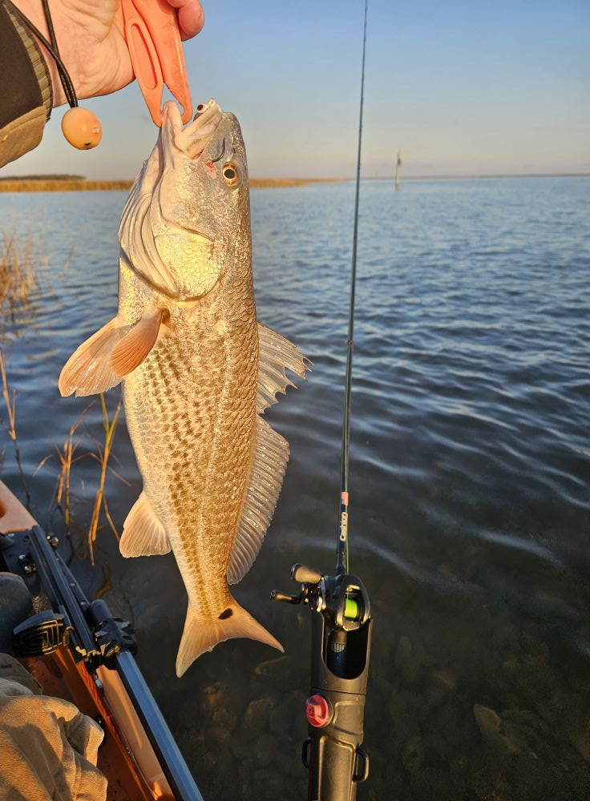
Want to drop down for some sheepshead? These fish are moving in from offshore and put up a great fight and also taste amazing! Grab your fiddler crabs or live shrimp and let's go find the sheep! Just kidding, we will get the bait.
Book This Trip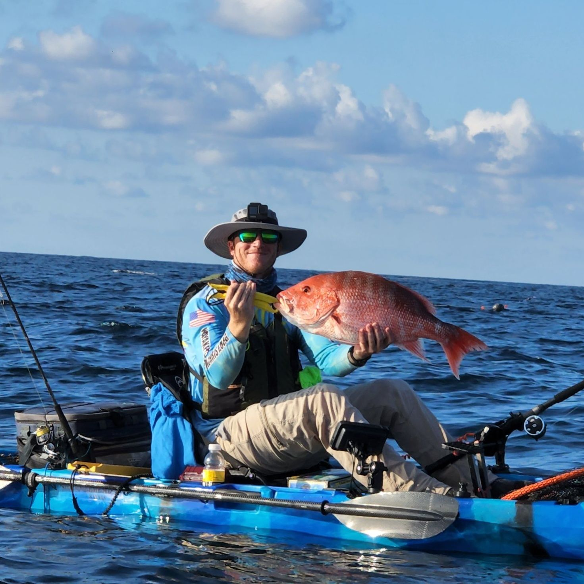
Paddle out to the reefs and hook into red snapper from a kayak. The adrenaline is unmatched. This trip is not for beginners — it requires paddling through waves and the physical endurance to handle big fish in open water. Captain Reno's knowledge of reef locations is incredible.
Book This Trip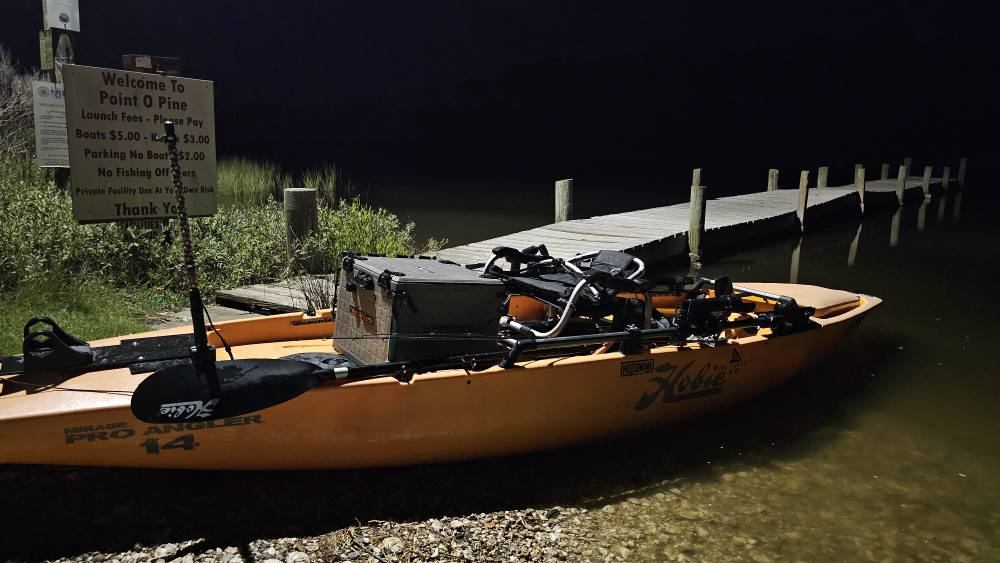
Experience the magic of fishing under the lights after dark. The water turns crystal clear as fish swarm beneath the glow — sheepshead, trout, flounder, and more. An experience you'll never forget.
Book This Trip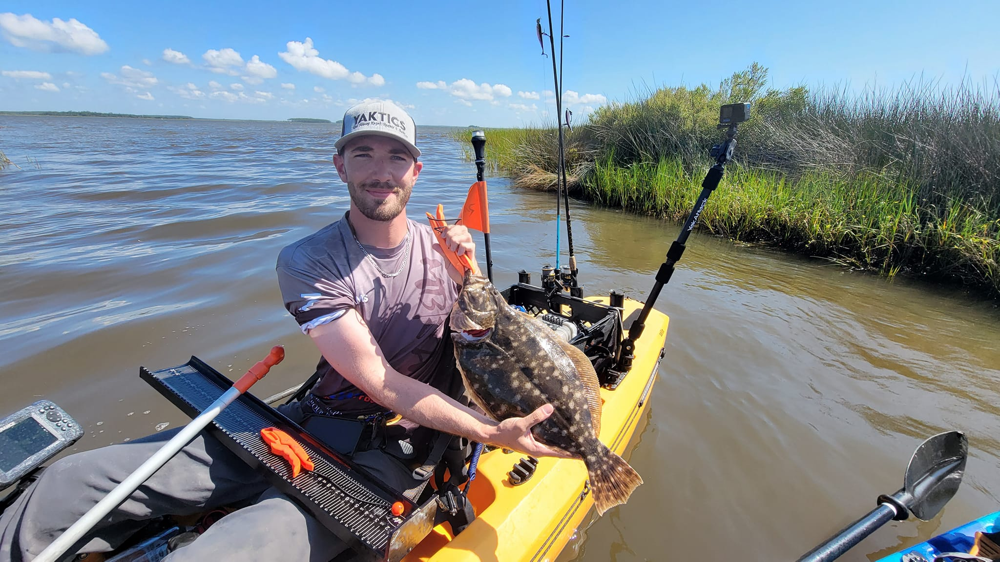
Target doormat flounder in the passes and channels of the Gulf Coast. These flat fish are masters of camouflage but Captain Reno knows exactly where they hide. Great eating and a blast on light tackle.
Book This Trip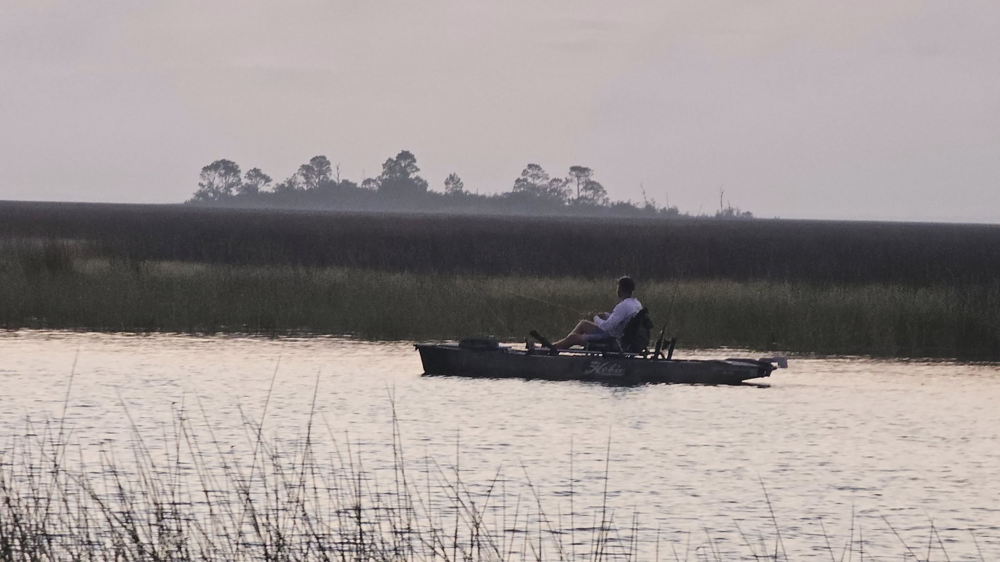
Explore secluded beaches, spot dolphins, and take in breathtaking views of Dauphin Island from the water. Fish along the way if you'd like.
Book This Tour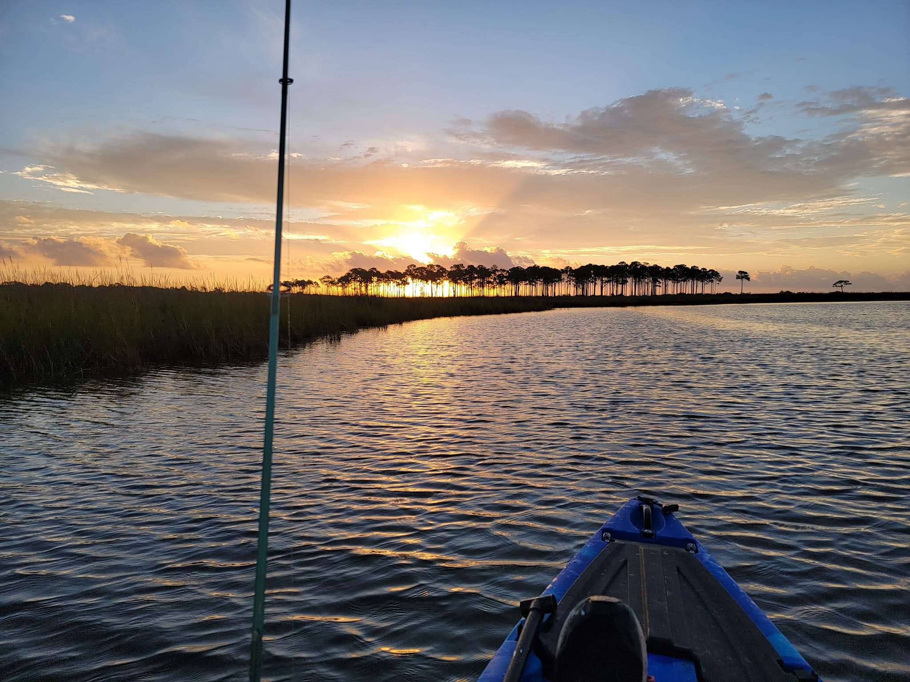
Paddle around the historic USS Alabama Battleship and explore Mobile Bay. An incredible blend of history, nature, and adventure on the water.
Book This Tour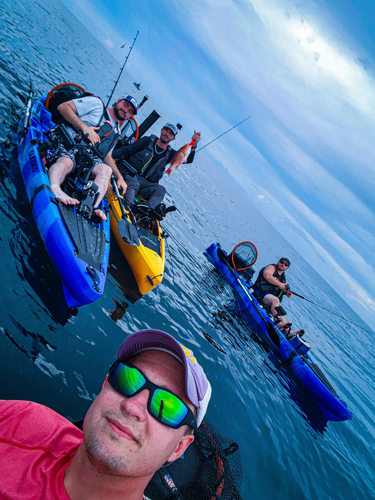
Bring your own kayak and let Captain Reno guide you to the best spots. Get the local knowledge and expert instruction without renting gear.
Book This TripTop-of-the-line pedal-drive kayaks available for rent. Perfect for anglers who want to explore on their own.
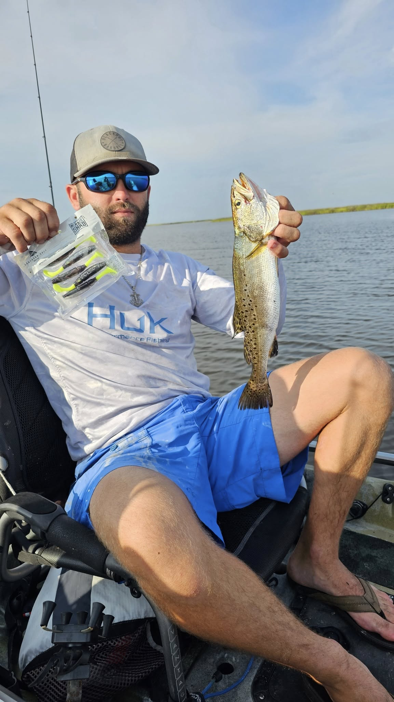
Welcome to Yaktics! I'm Captain Reno, and I've spent years exploring every inch of the Gulf Coast waters from Alabama to Florida. From the hidden marsh channels where trophy redfish tail in the shallows to the offshore reefs teeming with snapper, I know these waters like the back of my hand.
What sets us apart is the kayak experience. There's nothing like the thrill of paddling into a quiet marsh at dawn, spotting a school of speckled trout, and making that perfect cast. It's fishing the way it was meant to be — intimate, adventurous, and unforgettable.
Whether you're a seasoned angler looking to target specific species or a beginner wanting to learn the ropes, I'll make sure you have an incredible time on the water. We provide top-of-the-line pedal-drive kayaks, all the gear you need, and the local knowledge that only comes from years of fishing these waters every single day.
Real moments from real trips on the Gulf Coast.
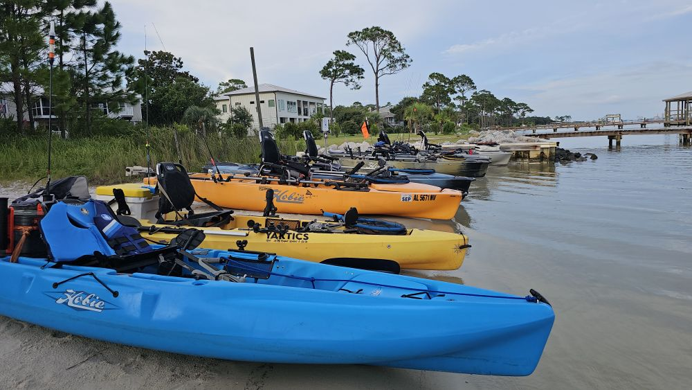
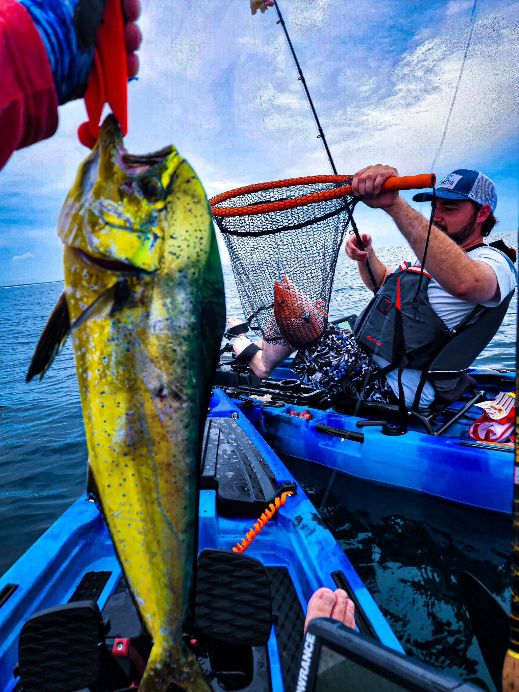
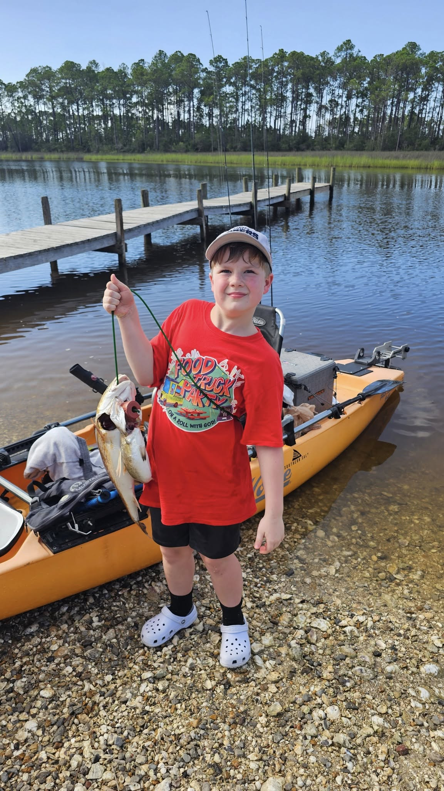
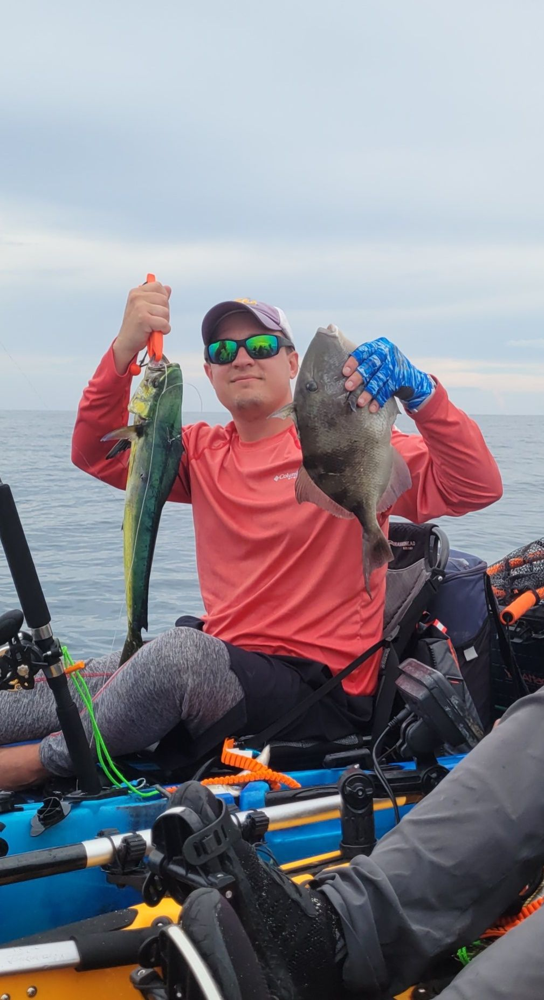
"Best fishing trip I've ever been on. Captain Reno put us right on the trout and we limited out before noon. The kayak experience is something else entirely — so much more connected to nature than a powerboat."
"We booked the Dauphin Island scenic tour for our anniversary and it was absolutely magical. Found a secluded beach, saw dolphins, and even caught a few redfish on the way back. Reno made us feel safe the whole time."
"The offshore snapper trip was intense! Paddling through the waves and then hooking into red snapper from a kayak — the adrenaline is unmatched. Reno's knowledge of the reef locations is incredible."
"Landed my personal best redfish in the marsh. Sight fishing in 18 inches of water from a kayak — you can see everything. Reno knew exactly where to position us. Already booked my next trip."
"Night fishing on the lights was an experience I'll never forget. The water was crystal clear and you could see sheepshead and trout swarming below. Caught more fish than I can count. 10/10 recommend."
"Rented two kayaks for me and my son. The pedal-drive kayaks are top notch and the insurance option gave us peace of mind. Reno met us at the launch and showed us the best spots. We'll be back!"
Everything you need to know before your trip. Still have questions? Give us a call.
Call (251) 272-9834Bring sunscreen, polarized sunglasses, a hat, water, snacks, and a towel. Wear clothes you don't mind getting wet. We provide all fishing gear, kayaks, bait, and tackle. A cooler with ice is provided for your catch.
Not at all! Captain Reno works with all skill levels, from first-timers to seasoned pros. He'll teach you everything you need to know about kayak fishing, casting techniques, and reading the water. The only exception is the Offshore Snapper trip, which requires some experience due to the physical demands.
The launch location varies depending on the trip type, tide conditions, and target species. Captain Reno will send you the exact meeting location via text the evening before your trip. Typical launch points are along the Alabama and Florida Gulf Coast, including spots near Gulf Shores, Dauphin Island, and Mobile Bay.
Safety is our top priority. If conditions are unsafe (lightning, high winds, severe storms), we will reschedule your trip at no extra cost. Light rain usually doesn't stop us — some of the best fishing happens right before or after a storm. Captain Reno will contact you if there's any concern about conditions.
Most trips accommodate 1-2 anglers per guide to ensure a personalized, quality experience. For larger groups, we can arrange multiple kayaks and coordinate the trip so everyone stays together. Contact us directly for group pricing and availability.
Yes, a valid Alabama or Florida saltwater fishing license is required depending on where we fish. You can purchase one online through the state's wildlife agency website. Captain Reno can walk you through the process when you book. Non-resident licenses are available for out-of-state visitors.
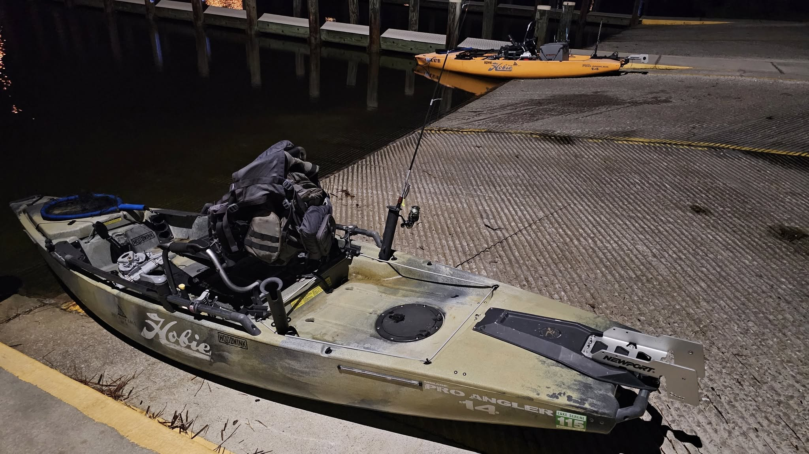
Choose your trip, pick your date, and get on the water. Contact Captain Reno to reserve your spot today.